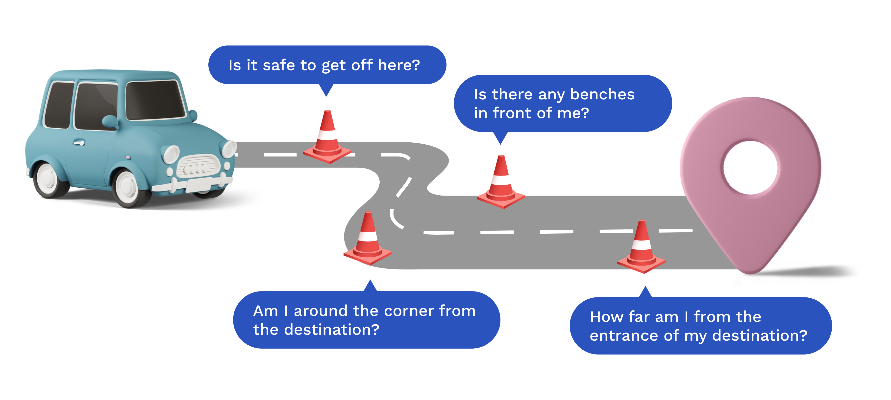
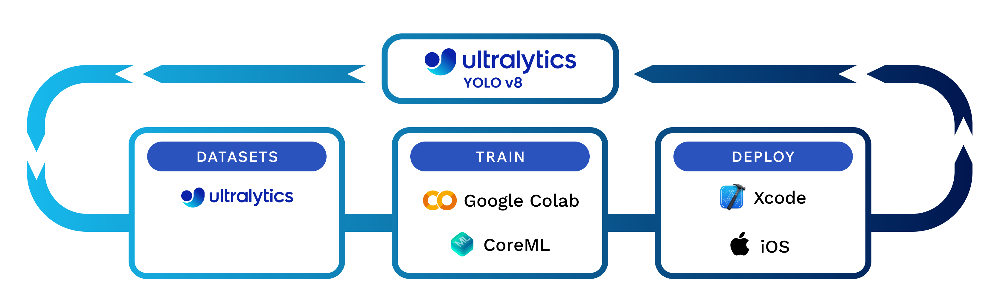

Overview
Brief
SafeStep is a mobile application developed to improve the mobility and navigation experience for visually impaired individuals using rideshare services. The app provides real-time navigation and obstacle detection, empowering users to travel safely and independently from the rideshare drop-off point to their final destination.
Duration
Sept 2023 - May 2024
Role
Researcher, iOS Developer
Skills
- User Interviews
- Usability Testing
- Expert Consultations
- Digital Prototyping
- Machine Learning Model Training
- Accessibility Testing
- App Development
Tools
- Swift (Xcode)
- Google Colabs
- CoreML
- Python
- Figma
Problem
Visually impaired travelers face significant challenges with rideshare services
There are over 20 million visually impaired Americans. These individuals struggle with navigating unfamiliar environments and avoiding physical obstacles during the transition from the vehicle to their final destination. Additionally, rideshare companies often sidestep ADA requirements, exacerbating accessibility issues for these travelers.
Motivation
Understanding the immediate needs of visually impaired rideshare users
SafeStep was inspired by the broader implications of autonomous vehicle technology for the visually impaired population. Recognizing the immediate needs within the existing rideshare landscape, the focus shifted to enhancing the current experience. This user-centered approach ensures that SafeStep addresses real-world problems effectively, improving both safety and independence for its users.
Pain Points
Challenges faced by visually impaired users throughout the rideshare journey
1. Preparing the Ride
Difficulty booking a ride through apps with screen-reader capability and voice command options.
2. Boarding the Vehicle
Difficulty locating the vehicle upon arrival.
3. During the Ride
Lack of auditory updates about the journey, current location, and ETA.
4. Exiting the Vehicle
Uncertainty about the safety and accuracy of the drop-off location.
Difficulty navigating to the final destination.
Target Audience
SafeStep is designed specifically for visually impaired travelers who encounter these challenges
Communication Barriers
Difficulty in communicating their needs to drivers due to language differences.
Safety Concerns
Navigating unfamiliar environments and avoiding obstacles after exiting the vehicle.
Limited Technological Support
Inadequate support forces reliance on others, compromising independence.
Need for Independence
Striving for autonomy in navigating the city.
Research Question
How might we make the journey from the car to the final destination safer, more reliable, and more enjoyable for visually impaired rideshare users?
SafeStep aims to address the critical question of how to improve the journey from the rideshare drop-off point to the final destination for visually impaired users. By leveraging advanced technologies and a user-centered design approach, SafeStep provides a reliable and enjoyable travel experience, ensuring users' safety and independence.
Insight 1
Accessibility challenges pose significant difficulties
Visually impaired travelers encounter significant difficulties in using rideshare services, especially when transitioning from the vehicle to their final destination. This gap is due to a lack of adequate technological support for obstacle detection and navigation.
Insight 2
User feedback highlights the need for reliable navigation assistance
Interviews and surveys with visually impaired users highlighted the need for real-time, reliable navigation assistance. Users expressed frustration with current solutions that do not adequately address their needs for safety and independence. They emphasized the desire for complete independence without relying on anyone to navigate the city.
Insight 3
Statistical data underscores the necessity of solutions like SafeStep
Research indicates that 8% of Americans have a visual impairment, and rideshare usage among blind or visually impaired individuals is double the rate compared to those with other disabilities. This underscores the necessity of solutions like SafeStep.
Rideshare Usage
7.1%: Blind and low-vision respondents
3.5%: Other disabled population
Two Major Mobility Problems from Blindness
- Avoid obstacles and detect drop-offs
- Navigation
Design Values
Core principles guiding SafeStep's development
1. Integrated
Seamlessly integrates with existing platforms, ensuring a smooth, user-friendly experience.
2. Supports Independence
Empowers users to travel autonomously, fostering self-reliance.
3. Convenient
Provides real-time, easy-to-understand feedback without the need for additional devices.
4. Cost-Effective
Ensures the technology is affordable, eliminating the need for expensive supplementary devices.
Research
Expert consultations ground the design in real-world needs
The development of SafeStep was grounded in extensive design research and consultations with experts from institutions such as the Perkins School for the Blind, the Carroll Center for the Blind, and Harvard Digital Accessibility Services. These consultations provided invaluable insights into the needs of visually impaired users, ensuring that SafeStep's design was user-centered and addressed real-world problems effectively.
Solution
Real-time navigation and obstacle detection for visually impaired travelers
SafeStep leverages cutting-edge technologies to provide its features. The app uses machine learning models, specifically the YOLO v8 model, for real-time object detection. GPS navigation is integrated to guide users from the drop-off point to their destination. The app's development involved using tools like Google Colab for model training and Xcode for app development, with integration via Apple's CoreML framework to optimize performance on iOS devices.
Key Features
Enhancing safety and independence through advanced features
By integrating advanced technologies and user-centered design principles, SafeStep ensures a safe, reliable, and enjoyable journey from the rideshare drop-off point to the final destination. Below are the key features that make SafeStep an essential tool for visually impaired users.
Object Detection
Utilizes advanced machine learning models to detect obstacles in real-time, ensuring user safety.
Multimodal Feedback
Combines audio, haptic, and voice feedback to inform users of obstacles and navigation cues.
Door Detection
Provides accurate guidance to the destination's entrance, ensuring users reach the correct location.
Voice Navigation
Offers detailed, voice-assisted directions from the drop-off point to the final destination, tailored for visually impaired users.
User Journey
Enhancing the rideshare experience from start to finish
1. Destination Arrival Alert
Users receive a notification as they approach the drop-off point.
2. Immediate Obstacle Alerts
Real-time haptic feedback alerts users to nearby obstacles.
3. Advanced Navigation Cues
Voice navigation provides detailed directions to the final destination.
4. Door Detection Activated
Haptic and voice feedback guide users to the correct door.

Prototype
Experience SafeStep’s features in action
The SafeStep prototype demonstrates how the app's features work together to create a seamless and safe navigation experience for visually impaired users. The following gallery and interactive demo provide an in-depth look at the app's interface, functionality, and user experience.


Testing and Validation
Ensuring real-world effectiveness through comprehensive testing
User Testing and Feedback
SafeStep underwent extensive user testing with visually impaired individuals to ensure its effectiveness and usability. Feedback was gathered through interviews, surveys, and real-world usage scenarios, highlighting the importance of clear and concise audio feedback, intuitive navigation, and reliable obstacle detection. This feedback was crucial in refining the app’s features and improving the overall user experience.
Technical Validation
The technical aspects of SafeStep, such as the YOLO v8 model for object detection and GPS integration for navigation, were rigorously tested in various environments. This ensured that the app performs reliably under different conditions and provides accurate, real-time information to users.
Iterative Improvements
Based on user feedback, several iterations of the app were developed. Each version was tested to identify any issues or areas for improvement. Key insights from testing led to enhancements in the accuracy of object detection, the responsiveness of multimodal feedback, and the clarity of voice navigation instructions.
Iteration 1: Picture-in-Picture Mode
The picture-in-picture mode for the map was too distracting for users, drawing their focus away from crucial real-time navigation cues.
Iteration 2: Middle Third Focus Area
Highlighting the focus area in the middle third of the screen and coloring it red improved distant object detection, but the constant vibrations and sense of urgency from the red color were distracting rather than helpful.
Reflection
Embracing empathy and user-centered design in an accessibility project
Understanding User Needs
One of the most significant learnings from the SafeStep project was the importance of deeply understanding the needs and challenges faced by visually impaired travelers. Engaging directly with users provided invaluable insights that shaped the design and functionality of the app.
Emphasizing User-Centered Design
The iterative design process, guided by user feedback, underscored the value of a user-centered approach. By continually refining the app based on real-world testing, SafeStep was able to deliver a solution that genuinely addresses the needs of its users.
Technical and Personal Growth
Working on SafeStep provided an opportunity to develop technical skills, particularly in machine learning and mobile app development. Additionally, the project fostered personal growth, highlighting the impact of accessible design and the importance of empathy in creating inclusive technology.